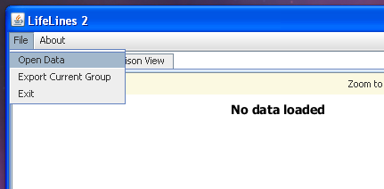
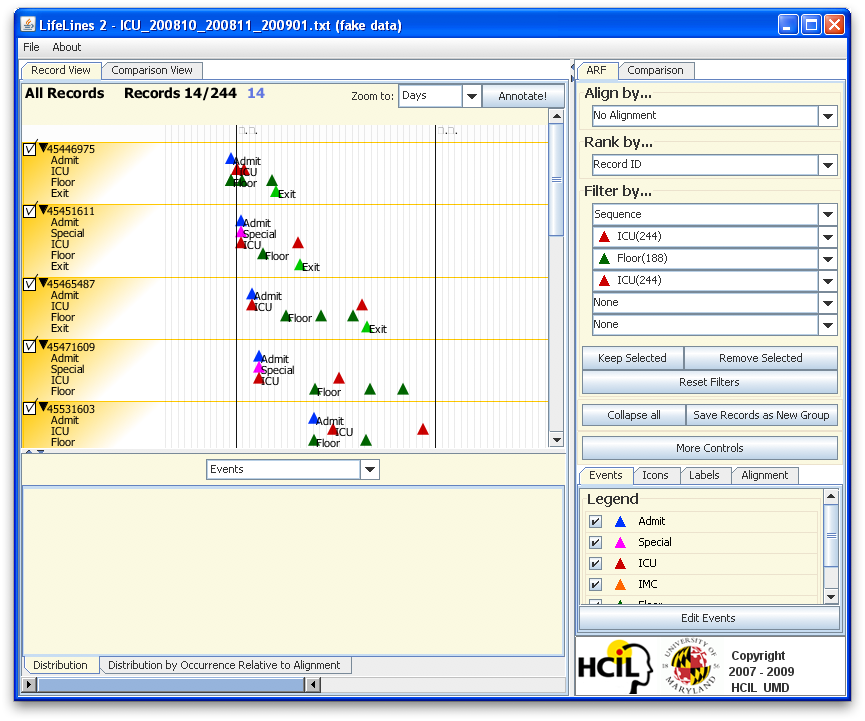
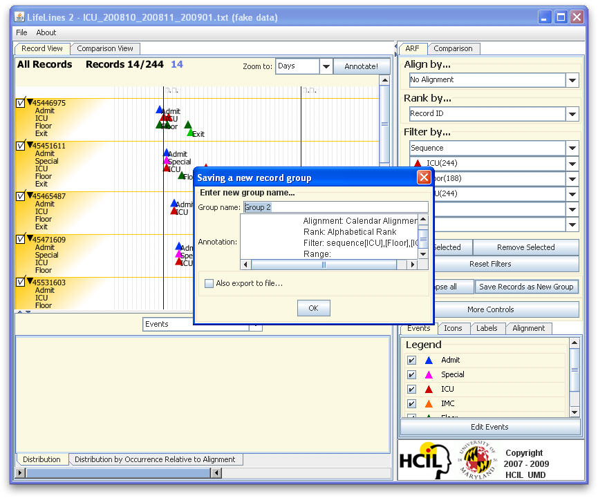
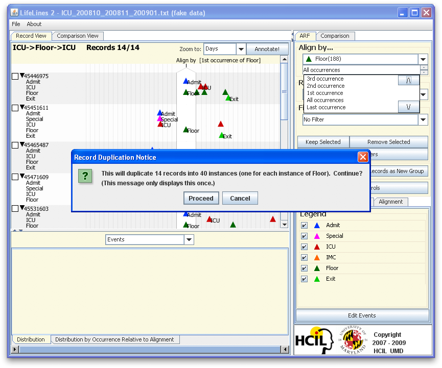
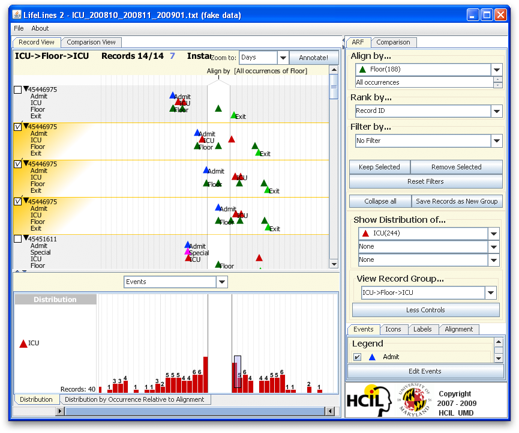
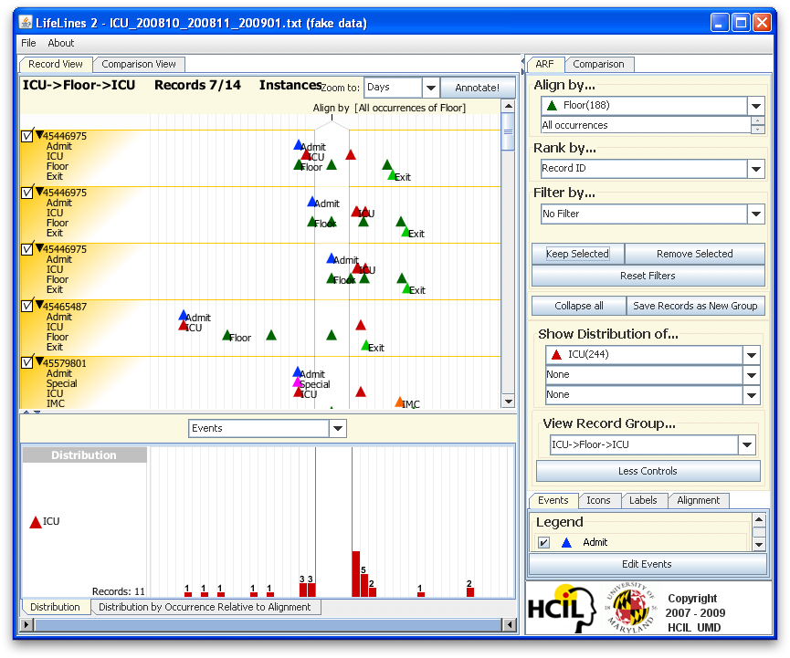
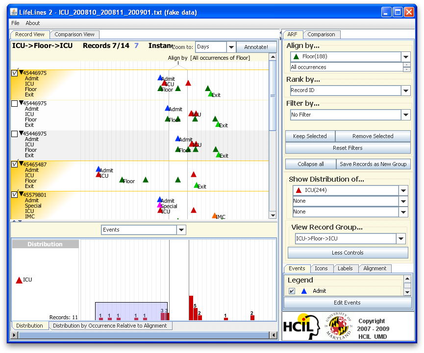
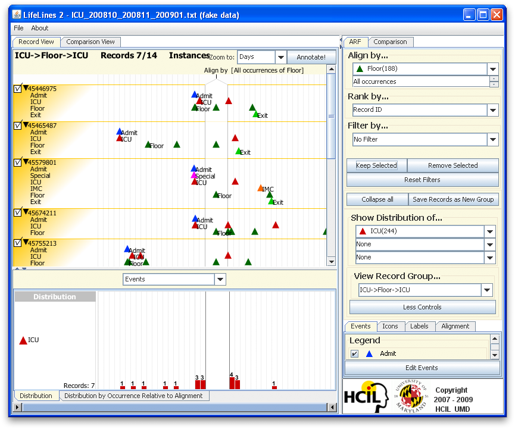
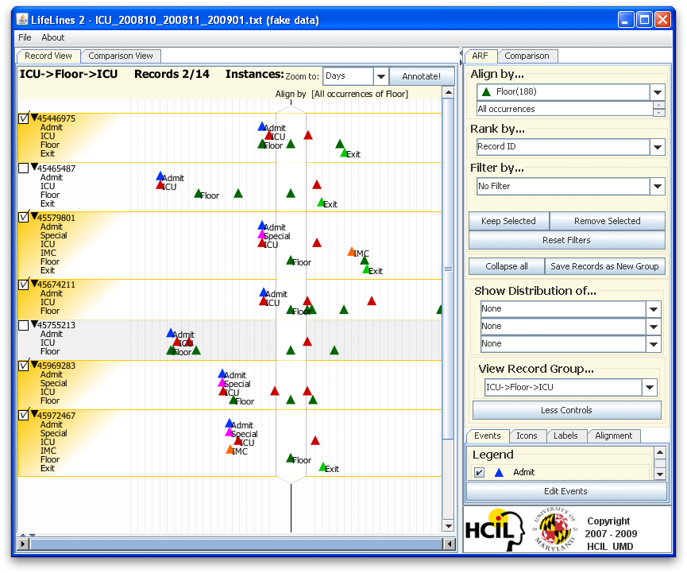

Step-by-Step InstructionsTask: Find patients who were transferred from ICU to floor and transferred back to ICU within 2 daysTool: LifeLines2 by: Krist Wongsuphasawat Last update: July 31, 2009 Other alternative(s): See how to do this task in Similan.
1. Load the data fileLoad file from the menu

2. Use sequence filterUse sequence filter "ICU", "Floor", "ICU" to find patients who have the sequence regardless of time and click on "Keep Selected"

3. Save record as a new group14 patients were selected. Click on "Save Records as New Group" to save this group. Name it "ICU->Floor->ICU".

4. AlignAlign by all occurrences of "Floor". We then call "Floor" the Sentinel event. The program may ask you about duplication. Please click "Proceed".

5. Filter by the distribution of "ICU" after the sentinel eventShow the distribution of ICU from the combobox. Draw a selection on the bar chart to select patients who were moved to ICU within 2 days after the sentinel event ("Floor").

Click on "Keep Selected".

6. Filter by the distribution of "ICU" before the sentinel eventWithin the result set from 5., select all patients who were in ICU before the sentinel event, which means they were transferred from ICU to Floor first, by drawing a selection on the bar charts.

Click on "Keep Selected".

7. Manually remove non-relevant resultsPatient #45665487 and #45755213 were transferred within the floor a few times before they were transferred back to ICU so they should not be selected. 8. DoneThis is the result. 5 patients from 244 patients were transferred from ICU to floor and transferred back to ICU within 2 days.

|